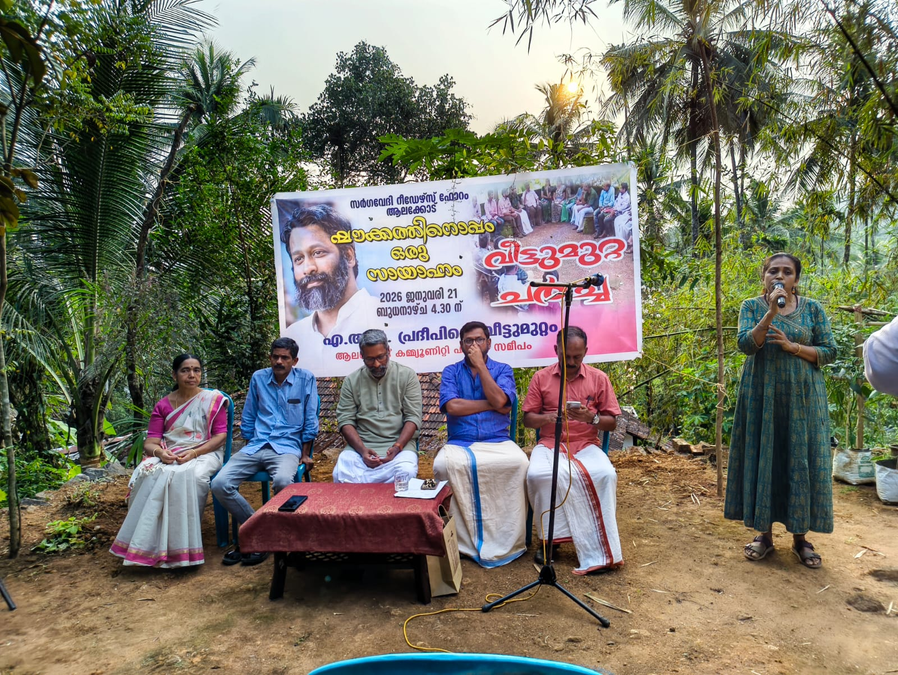
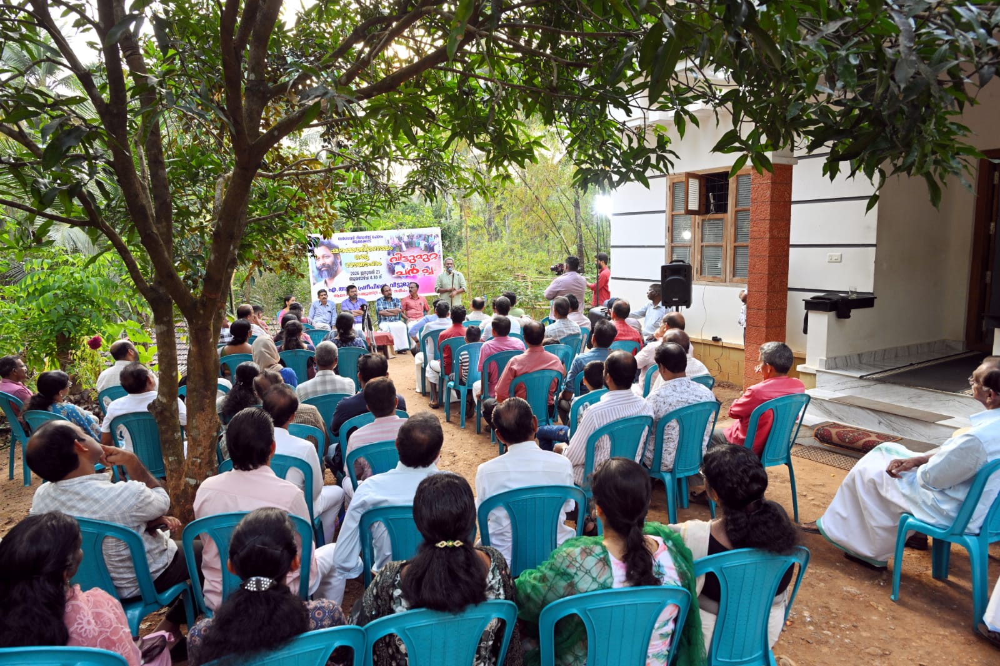
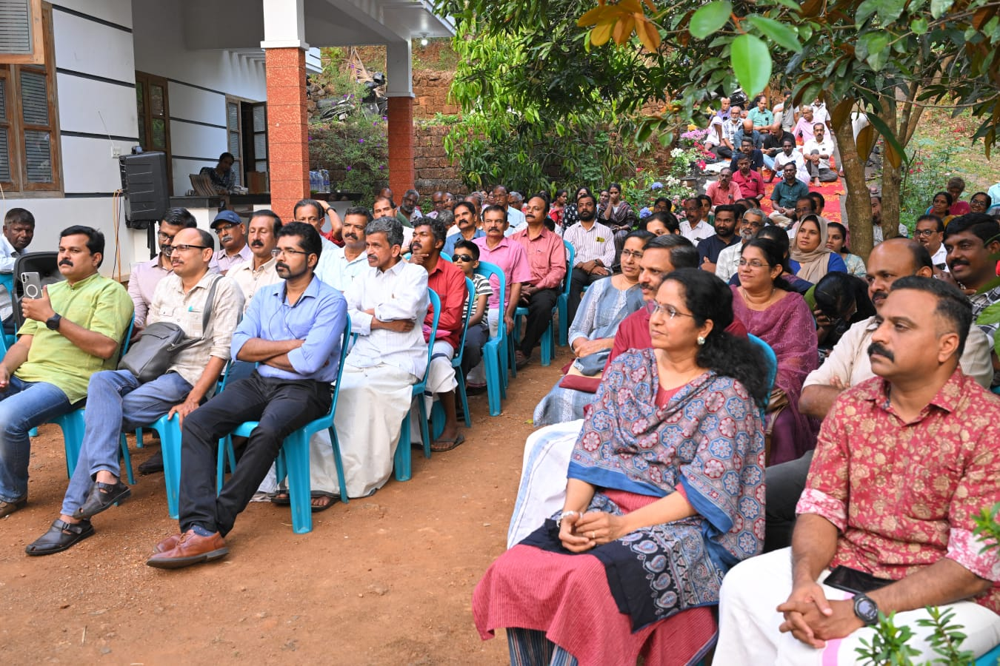
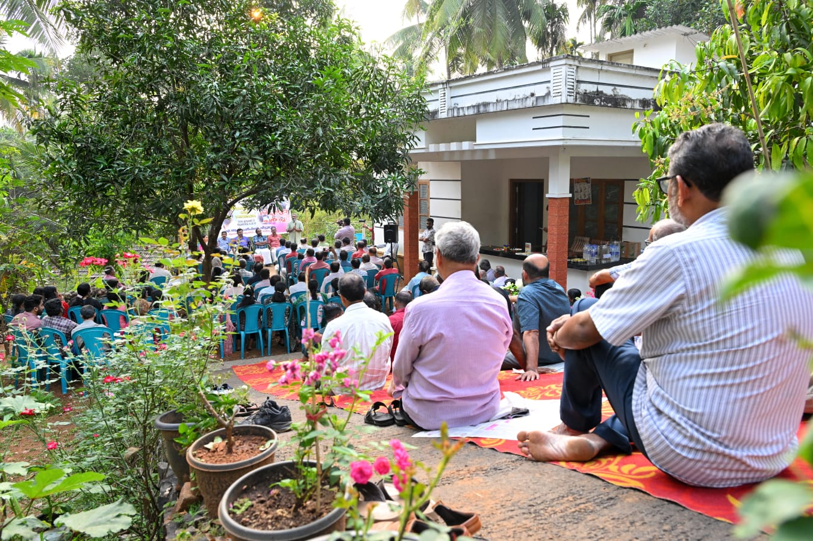

സർഗവേദി റീഡേർസ് ഫോറത്തിൻ്റെ ആഭിമുഖ്യത്തിൽ എം ആർ പ്രദീപ് സാറിൻ്റെ വീട്ടുമുറ്റത്ത് വെച്ച് നടന്ന “ഷൗക്കത്തിനൊപ്പം ഒരു സായാഹ്നം” എന്ന വീട്ടുമുറ്റ ചർച്ചയിൽ പങ്കെടുത്തു.
ഈ പരിപാടിയിൽ പങ്കെടുത്തില്ലായിരുന്നുവെങ്കിൽ എനിക്കൊരു നഷ്ടബോധവും തോന്നില്ലായിരുന്നു. കാരണം ഇതിൽ പങ്കെടുത്തവർക്ക് മാത്രമേ ഇതിന്റെ മൂല്യം മനസിലാവുകയുള്ളു.

ഷൗക്കത്തിന്റെ ഓരോ വാക്കും ഓരോ പണത്തൂക്കം ഉള്ളതായിരുന്നു. കേട്ടറിഞ്ഞവർക്ക് ഇത് ഒരു പ്രഭാഷണം മാത്രമായിരിക്കും. എന്നാൽ പങ്കെടുത്തവർക്ക് ഇത് ഒരു അനുഭവമായിരുന്നു.
ജീവിതത്തിൽ പകർത്താൻ പറ്റുന്ന നിരവധി ചിന്തകൾ അദ്ദേഹത്തിന്റെ സംസാരത്തിൽ ഉണ്ടായിരുന്നു.

മറ്റുള്ളവരെ ക്ഷമാപൂർവം കേൾക്കേണ്ടതിന്റെ പ്രാധാന്യം, വീടുകളിലെ ജനാധിപത്യം, കുട്ടികളെ കേൾക്കുകയും പരിഗണിക്കുകയും ചെയ്യേണ്ടതിന്റെ ആവശ്യകത, ദേഷ്യത്തെ നിയന്ത്രിക്കുന്നതിന്റെ ആവശ്യകത എന്നിവയെക്കുറിച്ച് ഹൃദയസ്പർശിയായ ഭാഷണം.

ശ്രീ നാരായണ ഗുരു മുതൽ നിത്യ ചൈതന്യ യതി വരെ അദ്ദേഹത്തിന്റെ ചിന്തകളിൽ നിറഞ്ഞുനിന്നിരുന്നു. ഒരു വടവൃക്ഷത്തിന്റെ തണലിൽ ഇരുന്ന അനുഭവം പോലെ.
ഷൗക്കത്ത് ഗുരുവേ നന്ദി, നമസ്കാരം.